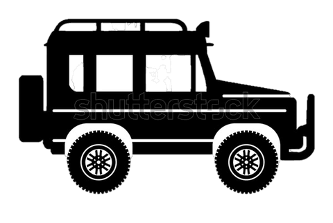

I am John Doe
And I'm a Photographer
Welcome Swahili Africa Safari
S.A.S
Lying just south of the equator and bounded by the Indian Ocean, Tanzania, East Africa's largest country is an endlessly fascinating place to visit. Filling the brochures areseveral world-famous attractions: Zanzibar, with its idyllic palm-fringed beaches, pristine coral reefs and historic Stone Town; the almost six-kilometre-high Mount Kilimanjaro, Africa's highest peak, which can be climbed in a week; and include Ngorongoro Crater, and the dusty Serengeti plains Add to this Tanzania's rich ethnic diversity, rainforest hikes and arguably the continent's best diving and snorkelling, and you have a holiday of a lifetime.
Treak
Beach
Safari
Culture
Safari
Culture
Crossing the Serengeti in a private jeep
Depending on the composition of your group, you will travel in a Land Cruiser seating 5 to 7 people, driven by one of our experienced guides – heading for the world’s most famous wildlife parks such as Lake Manyara, the Ngorongoro Crater, and, of course, the Serengeti. You will feel as if you were stepping into the world of National Geographic. Your car is provided with a special interior with a roof that pops up, allowing you to stand up straight to film or take pictures. You will be amazed at the wildlife you will get to see here.